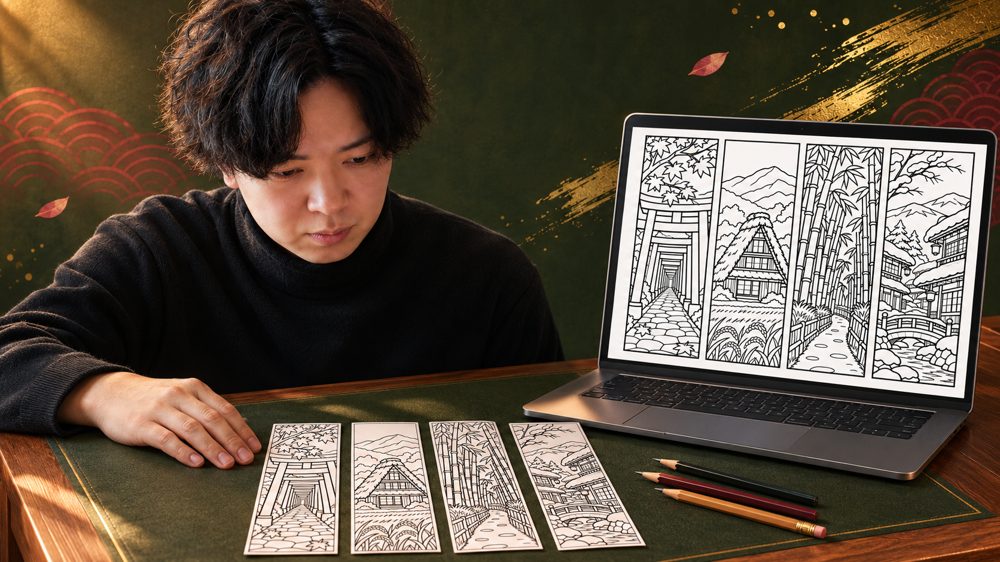
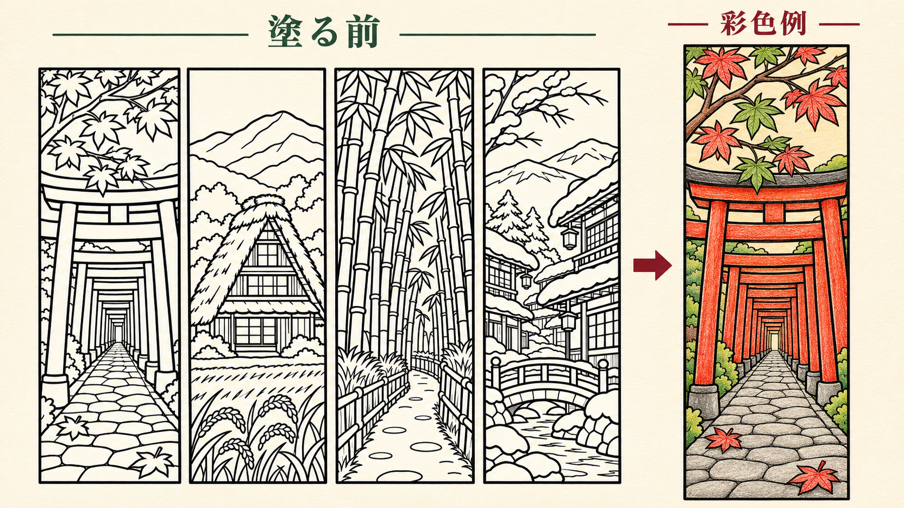
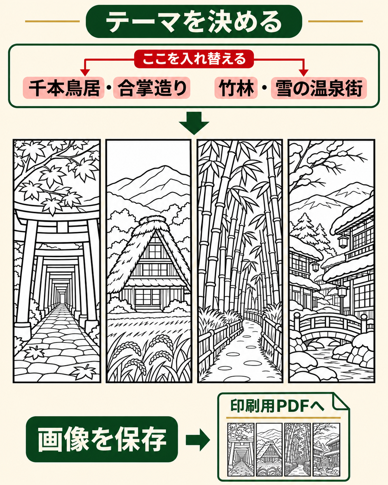
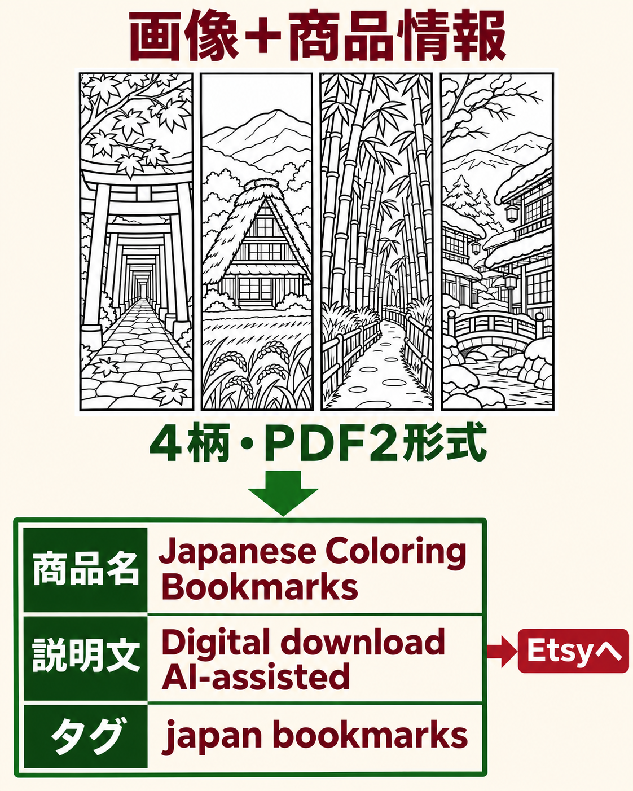
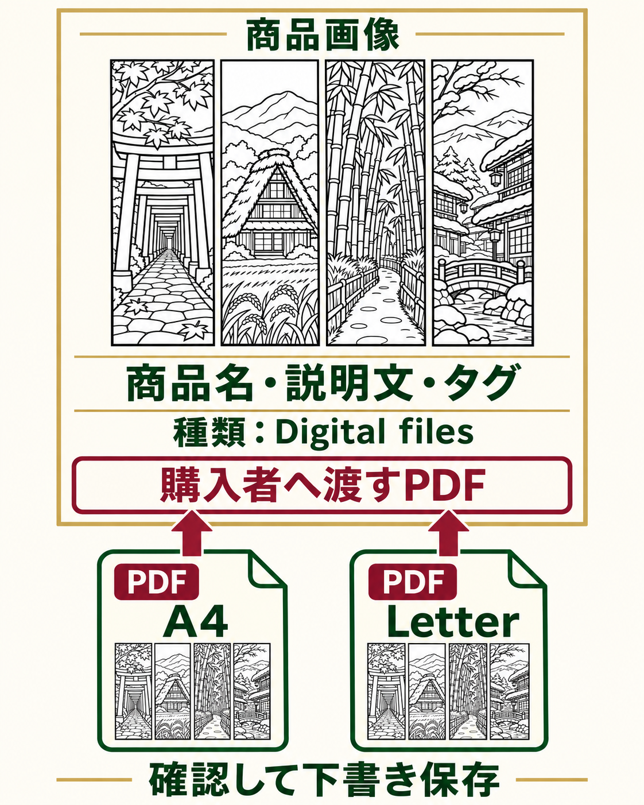
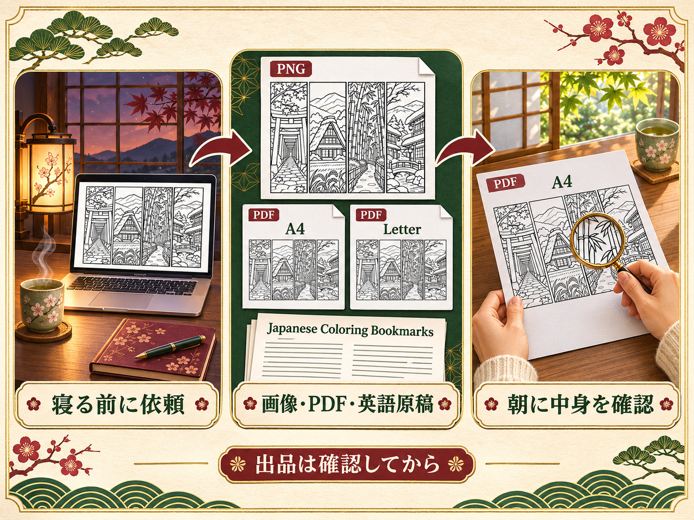
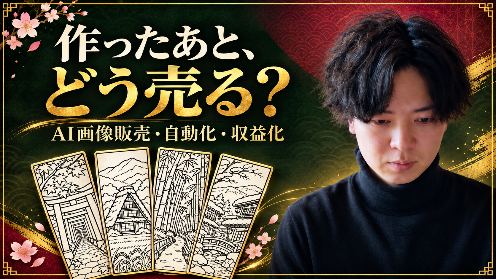

解説動画
いそっち式 AI塗り絵しおり販売マニュアル
絵も英語も、そこで止まってませんか？
- 絵を描けず、商品づくりが進まない
- 英語で何を書けばいいか分からない
- 在庫や発送を抱えずに売ってみたい
画像と英語をチャッピーに任せれば、出品までの準備を一つずつ進められます。

僕がお勧めするのは、日本らしい風景の塗り絵しおり。何を作って誰に売るか、そこを具体的にするんです。

今回はこの4柄で練習。売る作品は、自分の指示で生成します。
1塗り絵とPDFを作る
画像生成が使えるChatGPTを開きます。

画像を作る指示文
日本好きの海外の購入者に向けた、印刷用の塗り絵しおり画像を作ってください。 【テーマ】千本鳥居、合掌造り、竹林、雪の温泉街 横長4:3の白いキャンバスに、縦長1:3のしおりを4本、等間隔で横一列に配置。 各しおりは別々の長方形の黒い切り取り枠で囲み、絵を枠からはみ出させない。 白地に黒い輪郭線だけ。色、グレーの陰影、ベタ塗り、文字、ロゴ、透かしは不要。 外側の線はやや太く、内側は細く。印刷後に色を塗れる余白を残す。 鳥居の奥行き、合掌造りの急な茅葺き屋根、竹の節、雪の積もった木造旅館が分かる、自然な日本の風景にする。 画像だけを生成し、机や手や鉛筆の写真にはしない。
気になる部分を直す指示文
この画像の題材と4本の構成を保ったまま、次の箇所だけ直してください。 【直す箇所】例：2本目の屋根を、急勾配の茅葺き屋根へ直す。 白地に黒い輪郭線だけ、文字なし、塗るための余白と切り取り枠を保つ。
保存・PDFにする手順
添付した塗り絵画像を使い、印刷用PDFを2ファイル作ってください。 A4横とUS Letter横を、それぞれ1ページで作成する。 4本の絵を別々のしおりとして配置し、各しおりの外枠が幅50mm・高さ150mmになるようにする。 元の線画を描き直さず、4本それぞれの枠で切り出して配置。内容・順番は変えない。 外枠をページ内に収め、印刷の案内は絵の外に英語で短く置く。 案内：Print landscape at actual size / 100%. Color first, then cut. ファイル名は japan-bookmarks-A4.pdf と japan-bookmarks-Letter.pdf。 最後に各ファイルを開き、ページ数・寸法・4本の枠の欠けを確認して報告してください。 ファイルを作れない環境なら、作れたと答えず、どこまでできたか教えてください。
保存するときの確認
- 生成画像を開き、ダウンロード操作でPNGを保存します。メニュー名はアプリで異なる場合があります。
- 保存した画像を同じ会話へ添付し、上のPDF指示文を送ります。
- PDFのダウンロードリンクを開いて保存。4本の枠、線の途切れ、鳥居や屋根の不自然さを拡大して見ます。
- PDFを実際のサイズ100%・横向きで1枚試し刷りし、50×150mmと読める線を確認します。こちらの見本は実機印刷前の練習用です。
PDF作成が出ない場合はWorkなどファイル作成可能な環境で試します。画像だけを保存できた状態を、PDF完成としないでください。
2英語の出品文を作る

画像を添付して送ります。
英語の出品文を作る指示文
添付画像と次の商品情報だけを使い、Etsy用の英語の商品名、説明文、タグ13個を作ってください。 商品：日本の風景の塗り絵しおり4種類（千本鳥居、合掌造り、竹林、雪の温泉街）。 デジタルダウンロード。現物は発送しない。 購入者へ渡すファイル：A4横1ページとUS Letter横1ページのPDF、計2ファイル。同じ4柄を収録。 各しおりは幅50mm・高さ150mm。横向き・実際のサイズ100%で印刷し、色を塗って黒い枠で切る。 この作例の利用条件：購入者本人の個人利用のみ。データの再配布・再販売は禁止。 AIを使用して作成した線画であることを、説明文へ明記する。 タイトルは140文字以内で明瞭に。タグは各20文字以内で13個、重複を避ける。 説明文は「内容／印刷方法／デジタル商品の注意／利用条件／AI利用」を分ける。 画像や情報から分からない特長、手描き・300dpi・売上実績・効果・返品の一律禁止を作らない。 最後に、掲載前に確認すべき情報があれば日本語で挙げてください。
この作例の英語原稿
TITLE Japanese Coloring Bookmarks Printable, 4 Japan Scenery Designs, A4 and US Letter PDFs DESCRIPTION Color a little piece of Japan for your next reading session. This digital set contains four black-and-white bookmark designs inspired by torii gates, a gassho-style thatched house, a bamboo path, and a snowy onsen street. WHAT YOU RECEIVE - 2 printable PDF files: one A4 landscape page and one US Letter landscape page. - Each file contains the same 4 designs. - Each bookmark is 50 x 150 mm (approximately 1.97 x 5.91 inches) when printed at actual size. - The artwork is uncolored. A colored preview, if shown, is an example only. HOW TO USE Download the PDF matching your paper size. Print in landscape orientation at actual size / 100%; turn off fit-to-page scaling. Color with your preferred materials, then cut along the black borders. Printer and paper settings can affect the result. PLEASE NOTE This is a digital download. No physical item will be shipped. Paper, printer, pencils and cutting tools are not included. PERSONAL USE For the purchaser's personal use only. Do not resell, redistribute or share the digital files. AI DISCLOSURE The line art was created with AI assistance and arranged into printable PDF layouts. TAGS japan bookmarks coloring bookmark printable bookmark japanese scenery torii gate art bamboo coloring onsen village gassho house adult coloring digital download book lover gift print and color pdf bookmarks
英語で確認するところ
現物の発送なし、4柄・PDF2形式、印刷サイズ、個人利用、AI利用の説明が実物と合うか確認。価格と利用条件は、自分の商品に合わせて決めます。タイトルは140文字以内、タグは13個まで・各20文字以内を目安に、出品画面の制限に従います。
3Etsyに出品する

図は入力内容の対応です。実際の編集画面では表示が変わる場合があります。
ショップ準備から出品まで
- Etsyの出店手順で、ショップ・本人確認・入金方法・請求情報を整えます。新規開設時の費用が表示されたら金額を確認します。
- Shop ManagerのListingsからAdd a listingを選びます。商品の種類はDigital filesを選択します。
- 自分が作成したデザインであることやAIの使用について、実際に合う項目を選びます。説明文にもAI利用を明記します。
- 自分の完成画像、英語の商品名・説明文・タグを各欄へ。価格・カテゴリ・利用条件も決めます。
- Digital filesの欄へ購入者に渡すPDFだけを追加。教材のZIPや人物写真を商品として入れないでください。最大5ファイル、各20MBまでです。
- プレビューを見て、画像・文章・ファイル名が同じ商品を指すか確認し、いったん下書き保存。公開は出品料や各手数料を確認し、内容を最終確認してから行います。
下の公式手順で、自分の画面と照合できます。
寝る前に、制作を任せる
僕は寝る前にこう頼んでます。まずは1セット。画像もPDFも、中身を見てから出品しましょう。

Workで1回任せる指示文
日本好きの海外の購入者向けに、塗り絵しおり1セットを朝までに準備してください。 【テーマ】千本鳥居、合掌造り、竹林、雪の温泉街 【完成物】白地に黒線だけのしおり4本の画像／各50×150mmの印刷用PDF（A4横・US Letter横）／英語の商品名・説明文・タグ13個。 画像生成、ファイル作成が使えるかを先に確認し、できない工程は未完了としてください。 風景・構図・線の途切れ・枠の欠けを見て、問題があれば画像を直す。 英語は現物なし、PDF2ファイル、印刷方法、個人利用、AI利用を明記する。根拠のない実績や300dpi表記は足さない。 完成物を分かる名前で保存し、PDFを開いてページ数としおり寸法を確認する。 自分が確認するための短い完了報告と、未完了箇所を最後にまとめてください。 Etsyへのログイン・出品・公開・送信・購入はしない。新たな課金や設定変更をしない。 まず今回1回だけ実行。繰り返し設定はまだ作らない。
Workの開き方・繰り返しの設定
- ChatGPTでWorkを選び、上の指示文を送ります。デスクトップ版ではメニューのChatGPTからWorkへ。利用できるプラン・機能・上限を確認します。
- 初回は1回だけ実行し、画像生成とPDF保存までできるか、出力を実際に開いて確認します。途中で承認待ちになる場合もあります。
- 同じ作業を繰り返すならScheduledでタスクを作り、下の依頼文を使います。表示された予定時刻・日本時間・作業内容を確認して設定します。
- 翌朝は結果と未完了箇所を確認。使わなくなったらScheduledで一時停止します。デスクトップにScheduledがない場合はWeb版を使います。
実行環境と利用枠によって、画像生成やファイル作成が止まることがあります。最初から毎朝の全自動完成を前提にしないでください。プロジェクト内のタスクは、そのプロジェクトのアップロードファイルを参照できないため、必要条件を指示文にも含めます。
上の制作を、毎晩23:00（日本時間）に繰り返すタスクとして設定したいです。 今回1回の結果と同じく画像生成・PDF作成まで実行できるか、利用上限・必要な権限・停止条件を先に確認してください。 テーマは「千本鳥居／合掌造り／竹林／雪の温泉街」から1セット。各回の画像・PDF・英語原稿と未完了箇所を残す。 添付ファイルを毎回参照できると決めつけず、タスク本文に必要な条件を含める。 出品・公開・送信・購入、新たな課金はしない。確認が必要な操作では止まる。 実行予定時刻とタイムゾーンを表示し、私が内容を確認してから作成してください。
まず、1セット完成させよう
画像・PDF・英語原稿がそろったら、PDFを開いて4本の枠を確認します。
次はテーマを一つ変えてみよう。
指示文・見本・保存用ガイドをまとめて保存始める前の気になるところ
お金はかかる？
画像・ファイル作成の利用条件はChatGPTのプランで変わります。Etsyは出品料、販売時の取引手数料・決済手数料などがかかり、地域や通貨によって追加費用も変わります。販売価格から費用を引いて考えてください。
AIで作った絵は売れる？
Etsyでは自分の指示に基づくAI作品が認められますが、AI利用の開示が必要です。既存のキャラクター・写真・他人の作品を無断で使わず、自分のデザインとして規約を確認します。AIを使えば必ず売れるわけではありません。
レビュー数を売上と考えていい？
レビュー数と価格を掛けても、実売上は分かりません。この教材は、収益を保証するものではありません。

作品づくりの次は、売り方と作業の任せ方へ。
公式LINEでノウハウを受け取る無料